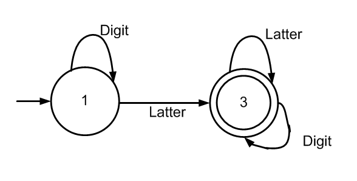

Ditulis oleh Irham Abdullah Pada 10 September 2020
Teori bahasa membicarakan bahasa formal (formal languange) , terutama untuk kepentingan perancangan kompilator (compiler) dan pemroses naskah (text processor) . Bahasa formal adalah kumpulan kalimat . Semua kalimat dalam sebuah bahasa dibangkitkan oleh sebuah tata bahasa (grammar) yang sama . Sebuah bahasa formal bisa dibangkitkan oleh dua atau lebih tata bahasa yang berbeda . Dikatakan bahasa formal karena grammar diciptakan mendahului pembangkitan setiap kalimatnya . Bahasa manusia bersifat sebaliknya . grammar diciptakan untuk meresmikan kata-kata yang hidup di masyarakat . Dalam pembicaraan selanjutnya , bahasa formal akan disebut bahasa saja
Automata adalah mesin abstrak yang dapat mengenali , menerima atau membangkitkan sebuah kalimat dalam bahasa tertentu . Automata berkaitan erat dengan teori bahasa formal . Selain itu juga ada beberapa hal yang berkaitan dengan Otomata , yaitu Grammar . Grammar adalah bentuk abstrak yang dapat diterima untuk membangkitkan suatu kalimat otomata berdasarkan suatu aturan tertentu .
Pemanfaatan otomata dapat diterapkan di beragam bidang yang merupakan asal dari teori otomata ditambah dengan penggunaan di bidang Komputer. Saat ini manusia telah menciptakan ribuan bahasa pemrograman komputer, ribuan bahasa pemrograman belum ditambah bahasa komputer lain seperti bahasa markup, bahasa typesetting, bahasa perintah, bahasa query, bahasa printer, bahasa pengenalan pola seperti pada penerapan penjaminan kualitas sirkuit elektronik yang menggunakan ekspresi regular untuk menyatakan pola sirkuit elektronik. Seluruh bidang aplikasi yang menyatakan persoalan sebagai serangkaian state yang senantiasa harus ditelusuri saat hidup aplikasi dan/atau untuk menemukan solusi adalah peluang untuk penerapan otomata. Seluruh bidang aplikasi yang berkehendak menyatakan keteratuaran sesuatu (struktur) atau kejadian atau rentetan kejadian yang mengikuti suatu kumpulan aturan tertentu dalam pembentkan barisan sesuatu yang berhingga atau tidak berhingga merupakan peluang penerapan teori otomata dadn teori bahasa formal.
Contoh penggunaan atumata dan bahasa dalah dalam aplikasi asisten pada smartphone, yaitu Siri dari Apple dan Cortana dari Microsoft.4 Siri adalah perangkat lunak yang dikembangkan oleh perusahaan asal Amerika Serikat, Apple, yang menggunakan perintah atau input suara. Aplikasi ini diterapkan pada perangkat smartphone milik Apple, yaitu iPhone. Ketika pengguna iPhone memerintahkan secara suara, iPhone akan menangkap suara ini, merubahnya menjadi file biner dan kemudian mengirimnya melalui jaringan internet ke server Apple di Amerika Serikat. Di server ini, suara ini akan diolah menjadi perintah yang sesuai dengan keperluan pengguna. Sama seperti Siri, Cortana adalah aplikasi perintah suara, dan aplikasi ini dikembangkan oleh Microsoft sebagai pesaing dari Siri. Prinsipekrja Cortana mirip dengan Siri. Cortana terdapat di perangkat yang menggunakan sistem operasi Windows 10. Penggunaan mesin ATM merupakan contoh lain dalam teori bahasa dan automata. Suatu mesin ATM meminta dan mebaca input dari user, lalu mencocokkannya dalam database bank dan menghasilkan output berupa uang yang diminta atau keterangan lain.